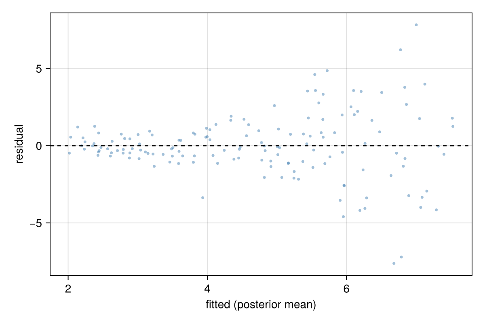

A distributional model
An ordinary regression models the mean of the response and assumes that the other parameters of its distribution, such as the residual standard deviation, are the same for every observation. A distributional model gives those parameters their own formulas. This tutorial models data whose spread grows with the predictor.
The data
We simulate crop yields at 150 fertiliser doses. The mean yield rises with the dose, and so does the variation between plots.
using PracticalBayesianRegression, DataFrames, Distributions, Random
rng = Xoshiro(7)
dose = 10 .* rand(rng, 150)
yield = 2 .+ 0.5 .* dose .+ exp.(-1 .+ 0.25 .* dose) .* randn(rng, 150)
crops = DataFrame(; yield, dose)
first(crops, 3)| Row | yield | dose |
|---|---|---|
| Float64 | Float64 | |
| 1 | 4.91161 | 5.47872 |
| 2 | 8.00038 | 7.8812 |
| 3 | 8.77338 | 9.98726 |
A model with constant spread
fit_const = brm(@bf(yield ~ dose), crops; seed = 1) Family gaussian
Links mu = identity; sigma = log
Formula yield ~ dose
Data 150 observations
Draws 4 chains × 2000 iterations (warmup 1000, thin 1) → 4000 draws
Sampler nuts · 8 ms per chain
── Regression Coefficients ──────────────────────────────────────────────────────
╭───────────┬───────────────────────────────────────────────────────────────────╮
│ │ Estimate Est.Error l-95% CI u-95% CI Rhat Bulk_ESS Tail_ESS │
├───────────┼───────────────────────────────────────────────────────────────────┤
│ Intercept │ 2.01 0.35 1.32 2.68 1.00 3867 2761 │
│ dose │ 0.55 0.06 0.43 0.68 1.00 4010 2427 │
╰───────────┴───────────────────────────────────────────────────────────────────╯
── Further Distributional Parameters ────────────────────────────────────────
╭───────┬───────────────────────────────────────────────────────────────────╮
│ │ Estimate Est.Error l-95% CI u-95% CI Rhat Bulk_ESS Tail_ESS │
├───────┼───────────────────────────────────────────────────────────────────┤
│ sigma │ 2.14 0.12 1.92 2.41 1.00 3923 2639 │
╰───────┴───────────────────────────────────────────────────────────────────╯
✓ Rhat ≤ 1.01 · ✓ ESS ≥ 400 · ✓ no divergences · ✓ treedepth < 10 · ✓ E-BFMI ≥ 0.3
The residuals of this fit fan out as the fitted values grow, which a constant sigma cannot describe:
using CairoMakie
residual_plot(fit_const)
Modelling sigma
Add a formula for sigma, the residual standard deviation of the gaussian family:
fit_dist = brm(@bf(yield ~ dose, sigma ~ dose), crops; seed = 1) Family gaussian
Links mu = identity; sigma = log
Formula yield ~ dose
sigma ~ dose
Data 150 observations
Draws 4 chains × 2000 iterations (warmup 1000, thin 1) → 4000 draws
Sampler nuts · 42 ms per chain
── Regression Coefficients ────────────────────────────────────────────────────────────
╭─────────────────┬───────────────────────────────────────────────────────────────────╮
│ │ Estimate Est.Error l-95% CI u-95% CI Rhat Bulk_ESS Tail_ESS │
├─────────────────┼───────────────────────────────────────────────────────────────────┤
│ Intercept │ 2.04 0.12 1.80 2.28 1.00 3495 2767 │
│ dose │ 0.54 0.04 0.45 0.62 1.00 1897 2115 │
│ sigma_Intercept │ -0.80 0.12 -1.02 -0.57 1.00 2852 2241 │
│ sigma_dose │ 0.24 0.02 0.20 0.29 1.00 2952 2511 │
╰─────────────────┴───────────────────────────────────────────────────────────────────╯
✓ Rhat ≤ 1.01 · ✓ ESS ≥ 400 · ✓ no divergences · ✓ treedepth < 10 · ✓ E-BFMI ≥ 0.3
The coefficients of sigma are on the log scale, the default link for sigma. sigma_dose is the change in log(sigma) per unit of dose, so the standard deviation is multiplied by exp(sigma_dose) for each unit:
exp(mean(draws(fit_dist, "b_sigma_dose")))1.2752677078227628The estimate is close to exp(0.25), the value used in the simulation.
Comparing the models
loo_compare("sigma ~ dose" => fit_dist, "constant sigma" => fit_const)2-element Vector{@NamedTuple{name::String, elpd_diff::Float64, se_diff::Float64, elpd::Float64}}:
(name = "sigma ~ dose", elpd_diff = 0.0, se_diff = 0.0, elpd = -271.758579011434)
(name = "constant sigma", elpd_diff = -57.2704074932725, se_diff = 10.01425798375039, elpd = -329.0289865047065)The distributional model predicts held-out observations clearly better.
What it changes
Both models estimate much the same mean line, but their predictive intervals differ. With a constant sigma the 90% predictive interval has the same width at every dose; with sigma ~ dose it widens with the dose, as the data do:
grid = DataFrame(dose = [1.0, 5.0, 9.0])
widths(fit) = [hi - lo for (lo, hi) in eachrow(predictive_interval(fit; newdata = grid))]
DataFrame(dose = grid.dose, constant = widths(fit_const), distributional = widths(fit_dist))| Row | dose | constant | distributional |
|---|---|---|---|
| Float64 | Float64 | Float64 | |
| 1 | 1.0 | 7.29787 | 1.93055 |
| 2 | 5.0 | 6.96344 | 5.04522 |
| 3 | 9.0 | 7.06413 | 13.5347 |
Any distributional parameter of a family can be modelled this way, with population- and group-level terms: shape of the negative binomial, phi of the beta, zi of zero-inflated families, and so on. The family's reference entry lists its parameters (Families).